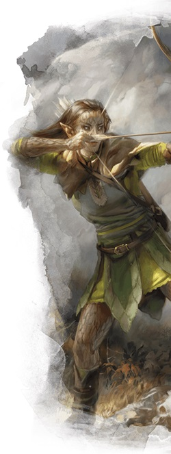

Chasseur
L'archétype du chasseur n'a pas autant d'accroches intégrées à son concept que les serments sacrés d'un paladin ou le patron d'Outremonde d'un occultiste, mais il est toujours facile de créer un chasseur avec une vision thématique cohérente. Et si vous estimez que les suggestions de jeu de rôle fournies par les sous-classes de paladin et d'occultiste ressemblent davantage à des contraintes qu'à des pistes, vous pourriez apprécier la relative liberté narrative offerte par l'archétype du chasseur.
Mais qu'est-ce qu'un chasseur à D&D ? La réponse dépend de vous. L'idée d'un chasseur de gros gibiers devenu aventurier est une voie assez évidente. De nombreux joueurs de rôdeurs aiment aussi faire de leur personnage un chasseur de primes qui traque les gens plutôt que les monstres. D'autres préfèrent la gloire d'incarner un chasseur de dragons ou de géants, mais finalement tous occupent le créneau plus général de chasseur de créatures, bien que celui-ci soit plus spécifiquement représenté par l'archétype de rôdeur tueur de monstres du Xanathar’s Guide to Everything.
L'archétype du chasseur permet d'infliger de gros dégâts en rafales rapides et peut se spécialiser dans la lutte contre des hordes de petits ennemis ou contre de grandes cibles solitaires. Legolas, comme décrit dans la trilogie du Seigneur des Anneaux de Peter Jackson, peut être représenté par un rôdeur elfe des bois avec l'archétype de chasseur (alors qu'Aragorn, bien qu'il soit qualifié de « rôdeur » dans les livres et les films, est plus un combattant qui va droit au but). Bref, le chasseur est vraiment la manifestation la plus emblématique de la classe de rôdeur, et aussi bien Robin des bois que Tarzan pourraient être considérés comme des chasseurs.
Capacités du chasseur
Les chasseurs sont des maîtres de l'embuscade et de la survie. Ils sont connus pour pouvoir traverser la nature sauvage avec le silence d'une panthère traquant sa proie. Ils gagnent quatre capacités de sous-classe aux niveaux 3, 7, 11 et 15. En résumé, ces capacités de sous-classe permettent :
- De choisir entre trois manières différentes d'obtenir des dégâts ou des attaques supplémentaires contre des ennemis solitaires, nombreux ou géants.
- De choisir entre trois options défensives différentes, comme rendre les attaques d'opportunité ou les attaques consécutives plus difficiles contre vous.
- De choisir une ou deux options offensives supérieures, comme pouvoir lancer une salve contre toutes les créatures dans un rayon de 3 mètres ou effectuer une attaque au corps à corps contre toutes les créatures dans un rayon de 1,50 mètre.
- De choisir entre trois options défensives supérieures, comme éliminer les effets d'un souffle de feu ou d'un éclair, ou réduire de moitié les dégâts d'une attaque au corps à corps.
Avantages du chasseur
Les chasseurs infligent des dégâts importants et combattent bien de loin avec un arc et des flèches, ou au contact avec une arme dans chaque main. De fait, les capacités de votre sous-classe vous seront extrêmement utiles car elles offrent une attaque et une défense supplémentaires au combat. Et si elles ne fournissent pas d'outils pour des situations autres que le combat, la classe de rôdeur est tellement remplie de bonus de situation pour l'exploration que vous ne vous sentirez jamais à court d'options hors combat.
Mais les capacités du chasseur brillent vraiment par leur polyvalence. Avec deux ou trois options distinctes pour chaque capacité de sous-classe, l'archétype du chasseur permet de personnaliser votre personnage comme bon vous semble tant qu'on reste dans le stéréotype du rôdeur qui se bat avec un arc long ou avec deux armes de corps à corps légères.
Inconvénients du chasseur
La plupart des défauts du chasseur sont endémiques à la classe de rôdeur dans son ensemble. L'un des plus criants, que vous rencontrerez régulièrement tout au long du jeu, est le nombre de sorts de rôdeur qui demandent de la concentration. Marque du chasseur, un sort que vous utiliserez probablement durant chaque combat pour infliger des dégâts, en est l'exemple le plus flagrant.
Néanmoins, les chasseurs souffrent d'un petit nombre de défauts propres à leur sous-classe. La possibilité de personnalisation fournie par les quatre capacités de la sous-classe est un excellent moyen de créer un chasseur unique, mais une fois que vous avez choisi une voie, vous êtes verrouillé. Si vous choisissez l'option Tueur de géants au niveau 3 mais ne combattez ensuite que rarement des ennemis de taille G, vous devriez demander à votre MD la possibilité de changer d'option, même si selon les règles cela n'est pas possible. Il est toutefois recommandé aux MD dans cette situation d'être ouverts et de permettre aux joueurs de changer leurs capacités de sous-classe, comme on peut changer les sorts connus de rôdeur chaque fois que l'on gagne un niveau. Peut-être souhaiterez-vous qu'il soit nécessaire de mener une quête pour trouver un tuteur, mais interdire fermement de changer des capacités est inutilement contraignant si cela est fait dans des limites raisonnables.
Exemple de personnage
Avant tout, si vous construisez un chasseur depuis le niveau 1, sachez que vous ne gagnerez pas votre sous-classe avant le niveau 3. Ensuite, lors de la création de votre personnage, vous devriez choisir une race qui vous donne un bonus en Dextérité, en Constitution ou en Sagesse, et idéalement dans au moins deux des trois. Vous pouvez jouer un rôdeur qui se concentre sur la Force plutôt que sur la Dextérité et qui utilise des armes de corps à corps à deux mains au lieu d'armes légères ou d'un arc, mais ce ne serait clairement pas un choix traditionnel. Jouer un elfe des bois ou un halfelin robuste est donc la meilleure option, les deux donnant un bonus important en Dextérité et un plus petit en Constitution ou en Sagesse, ainsi que quelques traits utiles. Les humains, les nains des collines et les gnomes des forêts sont également des choix de race utiles et intéressants pour les rôdeurs.
Comme d'habitude, le background de votre personnage dépend de vous. Certains rôdeurs sont nés dans la civilisation et ont ressenti l'appel de la nature dès leur plus jeune âge, tandis que d'autres ont vécu dans la nature sauvage toute leur vie. En tant que tel, le sauvageon et l'ermite constituent un historique de départ standard pour un rôdeur, alors que soldat, acolyte ou marin pourrait constituer un moyen intéressant de jouer un personnage atypique.
Pour l'équipement, choisissez une armure d'écailles si vous jouez un rôdeur avec une faible Dextérité, sinon choisissez une armure de cuir. De plus, à moins que vous n'ayez une raison spécifique de vouloir une arme courante de corps à corps, choisir deux épées courtes est le meilleur choix. Si vous souhaitez imiter Drizzt Do'Urden avec ses deux cimeterres, essayez de convaincre votre MD de vous permettre de commencer avec deux cimeterres au lieu des épées courtes. Un sac d'explorateur est idéal pour les rôdeurs qui évoluent dans la nature et vous n'avez d'autre choix que d'accepter un arc long. Au niveau 1, déterminez ce que vous aimez le plus : vous battre au corps à corps avec une épée courte dans chaque main, ou de loin avec votre arc long. Ensuite, ...
Style de combat
Au niveau 2, vous pouvez choisir un Style de combat. Les rôdeurs ont plusieurs options, mais pour vous les deux meilleures sont Archerie et Combat à deux armes. Archerie confère un bonus important en précision lorsque vous combattez avec des armes à distance (pas seulement avec des arcs) et Combat à deux armes octroie un petit bonus aux dégâts. Archerie est probablement le meilleur style, mais le concept de votre personnage doit l'emporter sur ce qui est mécaniquement « optimal ».
Défense est un style de combat acceptable si vous avez des défenses médiocres mais, en règle générale, il est préférable pour un rôdeur d'investir dans l'attaque. Duel n'est adapté que si vous jouez un rôdeur atypique axé sur la Force, avec une arme de corps à corps et un bouclier.
Sorts
Votre deuxième grande décision est aussi au niveau 2 lorsque vous obtenez la possibilité de lancer des sorts de votre propre liste de sorts. Bien que votre sélection de sorts soit limitée et que vous ayez accès à des sorts puissants plus lentement que les "vraies" classes de lanceur de sorts, cela s'équilibre avec votre arsenal au combat. Prenez le temps avant de devoir choisir votre sous-classe au niveau 3 pour évaluer votre rôle au sein du groupe. Ainsi, lorsque vous aurez fait votre choix, vous saurez de quels sorts votre groupe a régulièrement besoin.
Lorsque vous atteignez le niveau 2, vous apprenez deux sorts de niveau 1 à partir de la liste de sorts du rôdeur. Contrairement à d'autres classes de lanceur de sorts, une fois qu'un rôdeur apprend un sort, il le connaît pour toujours. Vous pouvez « échanger » un sort connu avec un autre sur votre liste de sorts lorsque vous gagnez un niveau, mais c'est tout. Ensuite, vous apprendrez un nouveau sort de rôdeur au niveau 3 puis à chaque niveau impair. Vous avez également accès à un nouveau niveau de sort au niveau 5 puis tous les quatre niveaux par la suite. C'est là que la reconversion des sorts devient importante ; si certains sorts de bas niveau ne vous servent plus à rien, vous pouvez les échanger l'un après l'autre contre des sorts de niveau supérieur, afin de vous adapter aux nouveaux défis.
En tant que sous-classe axée sur l'offensive, vous devriez commencer par choisir deux sorts offensifs au niveau 1. À partir de là, vous pourrez juger des sorts dont vous avez besoin pour mieux vous soutenir et soutenir votre groupe. Choisir quelques sorts défensifs ou de soutien de temps en temps ne vous fera pas de mal, mais assurez-vous que votre puissance offensive est toujours de premier ordre. De plus, comme mentionné ci-dessus, un grand nombre de sorts de rôdeur demandent de la concentration et vous ne pouvez pas avoir plus d'un sort de concentration actif à la fois, alors soyez prudent. Cette liste n'est toutefois là que pour vous aider à démarrer si vous jouez un chasseur pour la première fois. Avec l'expérience, vous pouvez bien entendu choisir d'autres sorts.
- Alarme (défensif)
- Soins (soutien)
- Frappe piégeuse (offensif/défensif)
- Grêle d'épines (offensif)
- Marque du chasseur (offensif)
- Communication avec les animaux (social)
Dons
Les rôdeurs ne gagnent pas beaucoup de dons, contrairement aux guerriers, et comme vous allez vouloir monter votre Dextérité et votre Sagesse aussi haut que possible, vous n'aurez pas beaucoup d'occasions de prendre des dons. Mais si avoir une Sagesse moyenne ne vous dérange pas ou si vous voulez simplement consolider certains de vos points faibles, prendre un don aux niveaux 4, 8, 12, 16 ou 19 peut être intéressant.
Maître-arbalétrier est parfait si vous portez une arbalète lourde au lieu d'un arc long. Cela rend votre rôdeur un peu moins élégant et un peu plus brutal, mais les avantages en valent la peine. Même si vous n'utilisez pas d'arbalète, ne pas avoir de désavantage lors des attaques à distance en combat au contact est intéressant.
Duelliste défensif permet d'utiliser votre réaction pour tenter de parer une attaque imminente. Cela peut être très utile pour les rôdeurs à deux armes, même si vous ne pouvez l'utiliser qu'une fois par round.
Combattant à deux armes est un bon choix si vous optez pour... le combat à deux armes ! Cela augmente à la fois votre attaque et votre défense.
Mobile est un choix de premier ordre pour les rôdeurs à deux armes, permettant de se déplacer sur le champ de bataille en toute impunité.
Lanceur de rituels contribue à augmenter le nombre d'emplacements de sorts et de sorts connus, ce qui en fait un don inhabituel, polyvalent et étonnamment pratique.
Tireur d'élite est indispensable pour les rôdeurs archers. Vos dégâts vont monter en flèche avec ce don, surtout si vous gagnez en précision avec votre Style de combat Archerie.
Mage de guerre peut vous aider à conserver vos précieux emplacements de sorts si vous devez faire des jets de sauvegarde pour maintenir votre concentration, mais il est surtout utile aux guerriers au corps à corps, les rôdeurs axés sur l'archerie ayant tendance à ne pas supporter le poids du combat.
Multiclassage
Rôdeur est une excellente classe pour se multiclasser, en particulier pour les campagnes de niveaux intermédiaires, mais pas pour les niveaux supérieurs. Les rôdeurs obtiennent leurs sorts de niveau 5 au niveau 17, et ces sorts assurent, mais leur capacité de niveau 20 n'est pas exceptionnelle. Si la magie des rôdeurs ne vous intéresse pas tant que ça mais que vous voulez être un assassin puissant et sournois, le rôdeur multiclassé roublard est parfait. Rôdeur/guerrier donne également des traits de combat solides. De même, rôdeur/druide donne à vos sorts un boost supplémentaire tout comme des niveaux de guerrier peuvent améliorer vos capacités martiales.
Basé sur un article de James Haeck, traduit par blueace